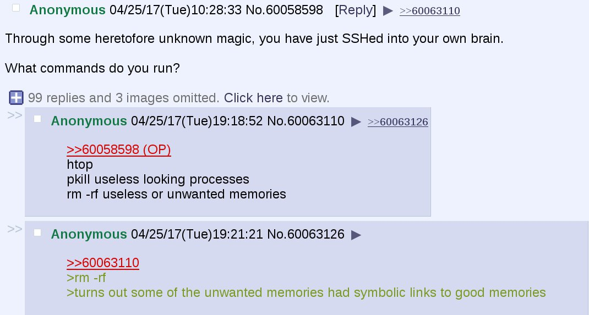
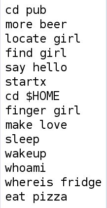

Conversation with newb central at Tue 25 Apr 2017 11:07:17 AEST on +61410193313 (telegram)
(11:07:17) List of 4 users:
[ Eddie Y ][ Monica Lolham ][ rlolham ][ Shant ]
(11:07:17) Eddie Y: lol a pedal for vim...
(11:07:52) Eddie Y: bah I didn't get the housing nsw job... some crap about they're restructuring and not hiring anyone new atm.
(11:09:12) Eddie Y: oh yeah this pedal thing.. there was an article a while back about how to turn arduino's into pedals that could send commands to a computer.
(11:36:44) Shant: laaame, more will come up man
(11:36:53) Shant: haha yeah pedals seem cool
(11:36:59) Shant: in an olde kinda way
(19:42:11) Eddie Y:

(19:42:17) Eddie Y:

(19:44:07) Eddie Y: that whoami is just crackup
(02:55:42) The account has disconnected and you are no longer in this chat. You will be automatically rejoined in the chat when the account reconnects.